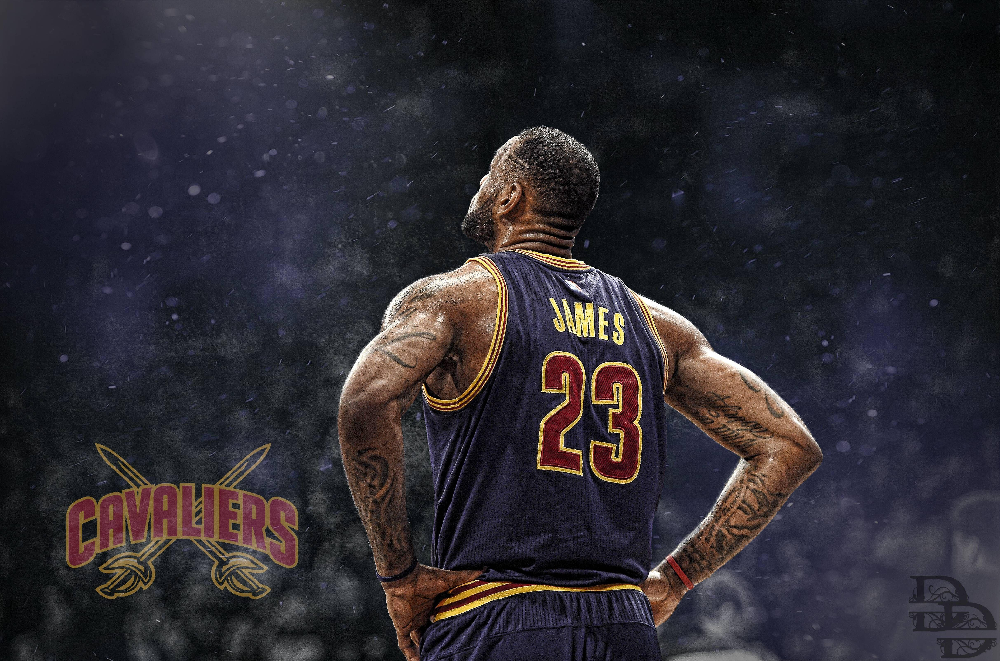
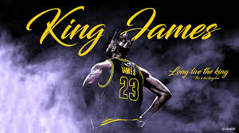
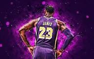
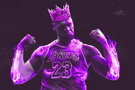

A Jornada do King James (THE GOAT🐐)

Quem é LeBron James?
LeBron James é um dos maiores jogadores de basquete de todos os tempos. Nascido em Akron, Ohio, ele superou desafios na infância para se tornar um líder dentro e fora das quadras. Seu talento, dedicação e humildade inspiram milhões de pessoas ao redor do mundo.
.jpg)
História e Primeiros Anos
Desde jovem, LeBron demonstrou um domínio extraordinário do basquete. Sua carreira no ensino médio chamou a atenção nacional, e ele foi selecionado como a primeira escolha do Draft da NBA em 2003. A jornada do seu bairro até a elite do esporte mostra determinação e coragem.

Conquistas e Legado
LeBron conquistou vários campeonatos da NBA, prêmios de MVP e medalhas olímpicas. Ele não é apenas um atleta vencedor, mas também um exemplo de liderança. Seu trabalho em comunidades e sua Fundação inspiram jovens a acreditar que sonhos grandes são possíveis.

Inspiração para o Futuro
King James nos ensina que o sucesso vem da combinação de talento, trabalho duro e apoio à comunidade. Sua história mostra que é possível transformar adversidade em força e usar a visibilidade para fazer a diferença.